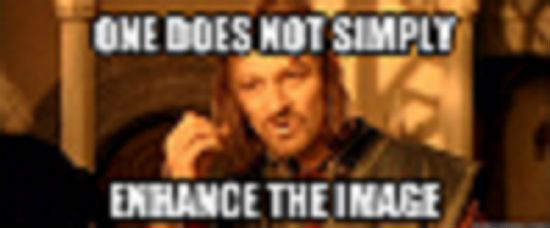
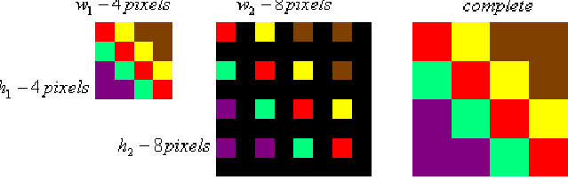
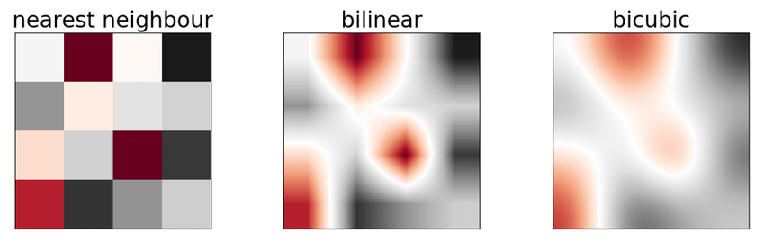

Microsoft Internship 2022
During the Summer of 2022, I pack my bags and flew to Washington to participate in Microsoft's Internship Program.

My Team
I was placed on the Windows Composition Engine Team. This team is responsible for a very crucial component of the Windows operating system, the DWM (Desktop Windows Manager). The DWM is a component of the Windows operating system that is responsible for managing the display of graphical user interface (GUI) elements on the screen. The DWM enables advanced features such as transparency, 3D effects, and visual styles, and is essential for the Aero Glass visual theme introduced in Windows Vista. The DWM works by intercepting all graphical output from applications and rendering it to the screen, rather than allowing each application to draw directly to the screen. This allows the DWM to manage the overall look and feel of the user interface, and to provide advanced features such as window animations and live previews.
My Project
Have you ever watched a movie and the crazy smart computer nerd is magically able to enhance a blurry image to get a clearer picture of the bad guy or to make out a license plate. Well... it's just not that simple. How do you create pixels out of thin air? This is where interpolation comes into play.
We use many methods for interpolation, each with their own strengths and weaknesses. Nearest-Neighbor can result in pixilated looking images, while bilinear can result in a more blurry look.
Average users don't tend to notice the side effects of interpolation too much, but our low vision users do! When you're using the magnifier over 400%, things like text (which uses nearest neighbor interpolation) can give you headaches and render Windows unusable.
My task was to see if we could improve the way Windows currenly interpolates by incorporating machine learning into the mix. Although I cannot say much about the results due to NDA, I will mention a few of the tools that I used.